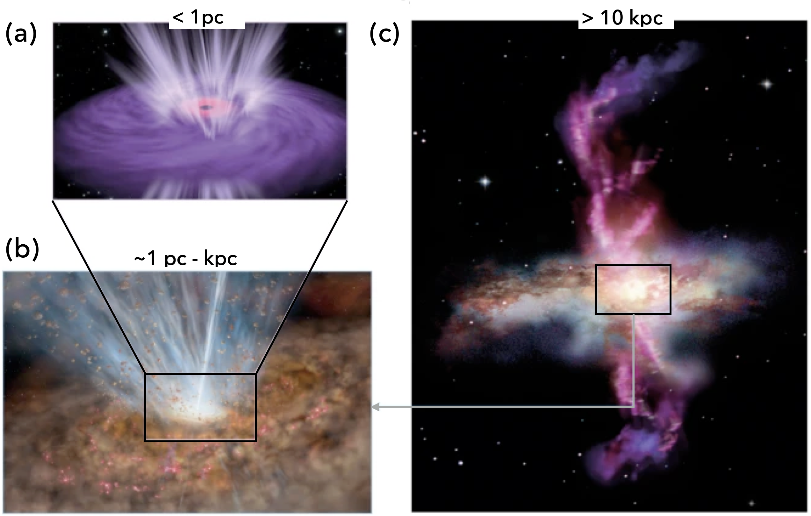
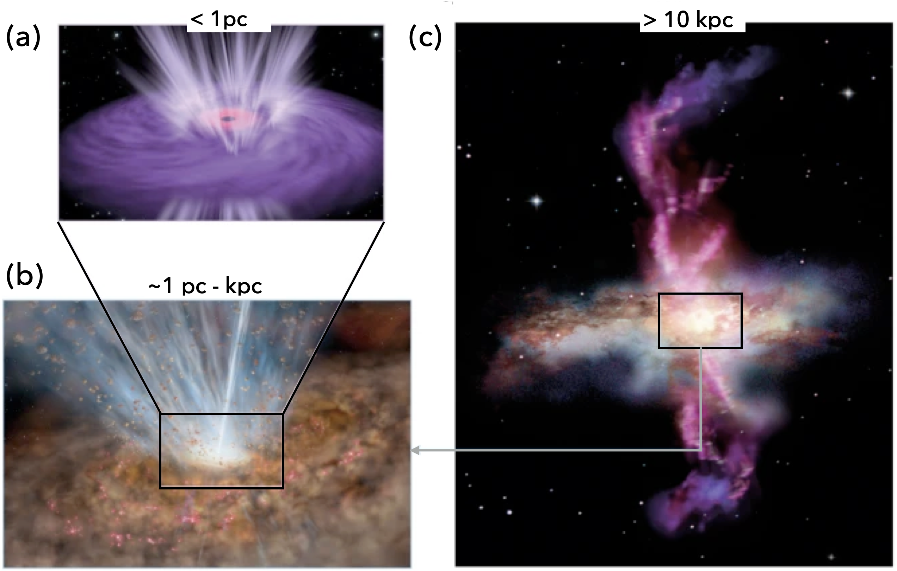
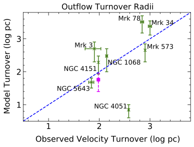
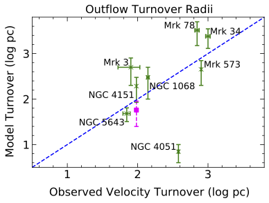

Overview
In the heart of nearly every galaxy lies a supermassive black hole (of a million to a billion times the sun's mass). The supermassive black holes (SMBHs) which are actively feeding through their accretion disk are called 'Active Galactic Nuclei (AGN),' and their host galaxies are called "Active Galaxies." When the accreting matter falls into the black hole, as a result of heating and friction, a lot of energy is emitted in the form of radiation. This radiation, so powerful that it can outshine the whole galaxy, makes an AGN one of the most luminous objects in the universe.
This emitted radiation further ionizes and drives the surrounding gas outwards and creates AGN feedback. This feedback may regulate the black hole feeding by evacuating gas from the circum-nuclear environment and, at the same time, may regulate the star formation at the center of galaxies by redistributing the cold molecular gas.
   |
Tracing ionized gas with long-slit Spectroscopy
Outflows driven by AGN can exist in form of molecular, neural or ionized gas. Understanding the role of each outflow phase is important to constraint the true impact of AGN feedback on star formation in a galaxy. For my PhD work, I focused on ionized gas outflows as seen in the strong emission lines at distances up to ~1 kpc from the nucleus, known as narrow-line region (NLR) outflows. These NLR outflows are valuable tools for understanding AGN feedback, providing direct evidence of AGN coupling with the gas in their host environments on scales of tens to hundreds of parsecs from the nucleus. I use long-slit spectroscopy measurements using APO's Dual Imaging Spectrograph (DIS) and HST's Space Telescope Imaging Spectrograph (STIS) to observe the strong lines such as [O III], Hβ, Hα which are emitted by the hot outflowing gas. The long slits allow us to measure these lines at various positions along the slit.
The figure on the left below shows four DIS long slits position overlayed on a beautiful color-composite image (created by Judy Schmittt) of galaxy Mrk 78. The NRL ionized gas in Mrk 78 can be seen in light blue color while some of the other features such as dust lanes are visible in dark brown. An example of the spectrum extracted at a certain using APO-DIS slit is shown on the right. The distinct double-peak profiles in [O III] λλ 4959,5007 lines shows the two distinct kinematic components of the gas at that location. The component close to the systemic redshift of the galaxy generally corresponds to the galaxy rotation. On the other hand, a high blueshift/redshift in the line profile represents the outflow signature.
  |
Open questions
What drives the NLR outflows? How are their velocities regulated? Where are they launched from?
For my PhD dissertation, I performed spatially-resolved kinematic studies of a sample of Seyfert galaxies, aiming to answer the above questions. For this, I developed a numerical model that combines acceleration from AGN luminosity and deceleration due to the gravitational potential of the supermassive black hole (SMBH) and the host galaxy. Using this model, I was able to trace the outflow trajectories and their launch distances from the AGN and establish the primary driving mechanisms behind NLR dynamics.
   |